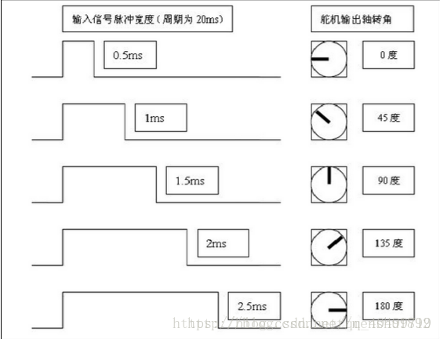
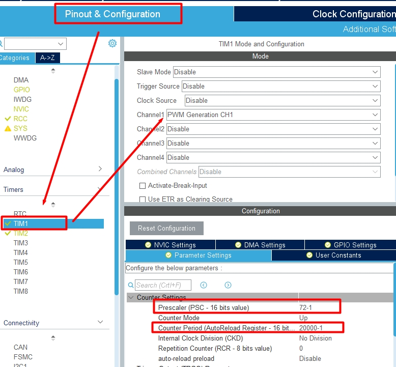
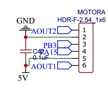
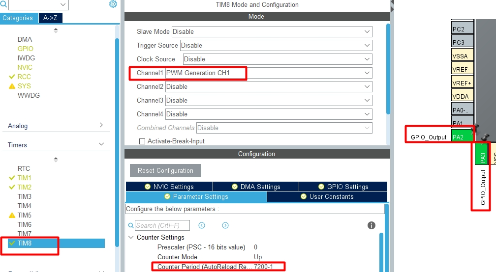
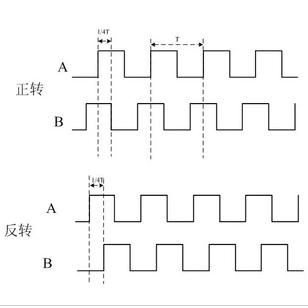
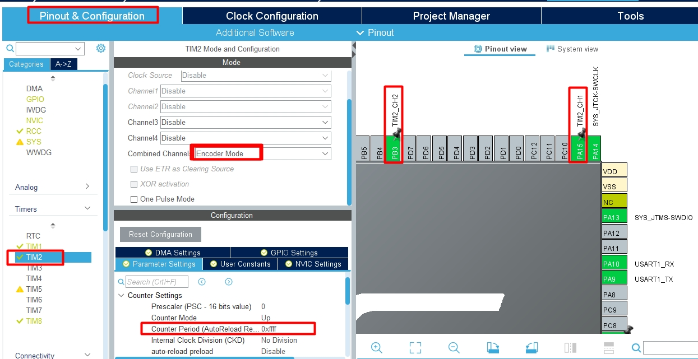

电机控制¶
本章我们要来给大家介绍两种电机,一种是舵机,一种的减速电机,下面我就分别来学习这两种电机.通过本章学习大家可以掌握如下知识点:
- 驱动电机
- 电机编码器读数
- 实时计算电机的转速
- PID算法
- 精确控制电机转动
1. PWM方波¶
脉冲宽度调制（PWM），是英文“Pulse Width Modulation”的缩写，简称脉宽调试。 是利用微处理器的数字输出来对模拟电路进行控制的一种非常有效的技术。广泛应用在 从测量、通信到功率控制与变换的许多领域中。
这里我们需要注意频率以及占空比的配置方式:
频率 = 定时器时钟 / （Prescaler 预分频 + 1）/ （Counter Period 计数值 + 1）Hz
占空比 = Pulse ( 对比值) / （C ounter Period 计数值）%
1 2 3 4 5 | |
练习题: 呼吸灯
2. 驱动舵机¶
舵机的主要组成部分为伺服电机，所谓伺服就是服从信号的要求而动作。在信号来之前，转子停止不动；信号来到之后，转子立即运动。因此我们就可以给舵机输入不同的信号,来控制其旋转到不同的角度。 舵机接收的是PWM信号，当信号进入内部电路产生一个偏置电压，触发电机通过减速齿轮带动电位器移动，使电压差为零时，电机停转，从而达到伺服的效果。简单来说就是给舵机一个特定的PWM信号，舵机就可以旋转到指定的位置。 舵机上有三根线，分别是GND(棕线)、VCC(红线)和SIG(黄线)，也就是地线、电源线和信号线，其中的PWM波就是从信号线输入给舵机的。
一般来说，舵机接收的PWM信号频率为50HZ，即周期为20ms。当高电平的脉宽在0.5ms-2.5ms之间时舵机就可以对应旋转到不同的角度。如下图。

这里我们单片机的时钟频率是72M ,如果我们想得到50hz的频率,那么我们需要设置分频系数和计数值.在这里我将分频系数设置为72,将计数值设置为20000.下面我们来计算一下频率:
1 2 | |
经过上面的公式,我们已经得到了10000hz,也就是1s中会变化10000次,那每变化一次需要多长时间呢?这里我们可以套用下面的公式
1 2 | |
这里的0.001ms说的就是每隔0.001ms计数值加1,讲到这里我相信大家应该知道计数值最大值应该填入多少了吧!
按照前面的规定,我们如果想要在20ms周期中得到0.5ms的高电平,那么pwm的占空比的计算方式应该如下:
1 2 3 | |
打开Cubemx设置舵机相关引脚, 注意我们要将舵机插在PE9上面

至于配置中为什么要减1,是因为STM32在计算的时候,会对我们填入的数据加1操作
当程序启动的时候,我们就启动定时器
1 | |
然后在程序的主循环中设定旋转的角度
1 2 3 4 5 6 7 8 9 10 11 | |
3. 驱动减速电机¶
直流减速电机，即齿轮减速电机，是在普通直流电机的基础上，加上配套齿轮减速箱。齿轮减速箱的作用是，提供较低的转速，较大的力矩。同时，齿轮箱不同的减速比可以提供不同的转速和力矩。这大大提高了，直流电机在自动化行业中的使用率。
电机驱动函数,我们需要如下两个问题:
- 电机的转速,我们可以通过定时器产生的PWM波来控制
- 电机的正反转,我们可以通过控制两个IO口的高低电平来改变方向
1 2 3 | |
上面的这种方式,是我们驱动L298N和TF6612电机驱动芯片的常用方法.
我们同样以驱动MotorA为例:
- 配置电机正反转的两个IO :
PA2和PA3 - 配置控制电机转速的PWM引脚:
PC6,需要将TIM8的Channel1设置为PWM Generation CH1


设置完成之后, 我们在main()函数中启动定时器
1 | |
在主循环中我们去控制电机的转速以及正反转
1 2 3 4 | |
我们可以尝试着去调整一下PA2和PA3的电平,看看电机的正反转, 也可以尝试去调整一下7200这个值,看看电机的转速.
3. 霍尔编码器¶
编码器的作用是用来计算电机的转速, 下图清晰的展示了编码器的工作原理. 通过在电机的传动轴上加装一个码盘,电机带动码盘转动, 而发射机与接收器成一对,
-
当光线穿过码盘上的孔的时候,我们假定接收器收到了高电平
-
当光线被阻断的时候,我们认为接收器收到了低电平
这样通过计算单位时间内高电平的次数除以码盘的孔数我们就可以很轻松的计算出电机的转速

我们常用的是霍尔编码器也称AB相编码器,它通过电路信号的变化来获取电机的转速,如果正转，一相输出超前另一相90度，如果反转一相滞后另一相90度
通过这样的方式,我们就可以计算电机转动的方向,同时还可以读取电机的转速

了解了编码器的工作原理之后,下一步我们就可以来编码了. 我们首先需要对CubeMx进行相应的配置,这里我们以PCB板子上A号电机为例,
我们先来看一下MotorA的电路图
我们可以把PB3和PA15配置成编码器模式,

获取编码器的数据¶
这里我们将对应的定时器,设置为编码器模式之后,然后就可以通过相应的API来获取电机的转速了.
首先在main()函数中启动定时器
1 | |
然后在主循环中我们就可以不断去读取编码器的数据啦!
1 2 | |
计算电机的转速¶
1 2 3 4 5 6 7 8 9 10 11 12 13 14 15 16 17 18 19 20 21 22 23 24 | |
PID控制¶
在工程实际中，应用最为广泛的调节器控制规律为比例、积分、微分控制，简称PID控制，又称PID调节。
比例P控制是一种最简单的控制方式。其控制器的输出与输入误差信号成比例关系。
积分I控制在积分控制中，控制器的输出与输入误差信号的积分成正比关系。
微分D控制在微分控制中，控制器的输出与输入误差信号的微分（即误差的变化率）成正比关系。
1 2 3 4 5 6 7 8 9 10 11 12 13 14 15 16 17 18 19 20 21 22 23 24 25 26 27 28 29 30 31 32 33 34 35 36 37 38 39 40 | |
关于PID值的设定, 我们暂时只要保证电机转起来比较顺畅即可!